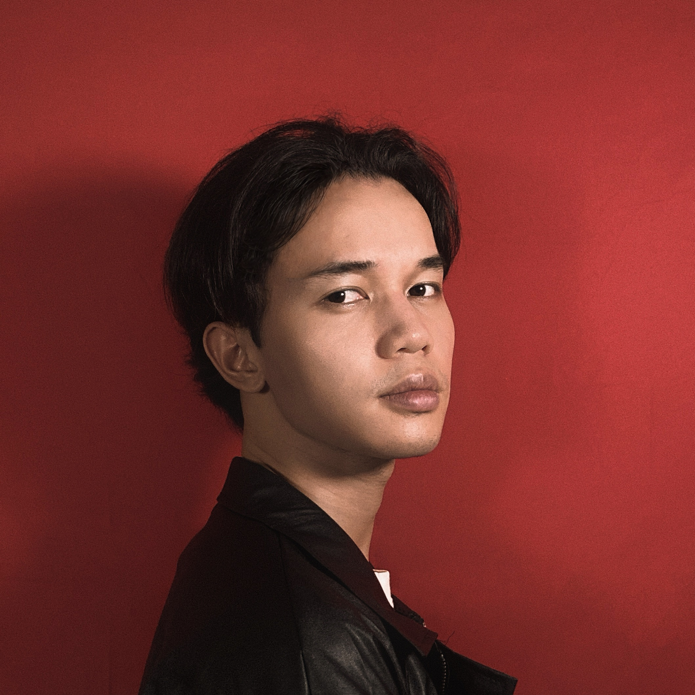

Pachara Buatim
Web Developer & Artist
Code, music and curiosity.
ABOUT
Hi, I'm Pachara. I'm a web developer who enjoys building things and bringing ideas to life. I like creating websites that are not only functional but also thoughtful in their design, focusing on clean layouts, smooth interactions, and experiences that feel natural to use.
Currently, I'm focused on improving my front-end development skills through personal projects and exploring the relationship between code and design. I'm learning more about modern web technologies, responsive design, and the process of turning ideas from concepts or designs into real, working products.
Beyond development, I'm interested in creative work that combines technology and self-expression. Music production has always been an important part of my life, and I enjoy experimenting with different sounds, ideas, and creative processes. I believe creativity from different fields can influence the way we approach problem-solving and design.
I'm always looking for opportunities to learn, create, and improve. Whether it's building a new project, exploring a new technology, or developing my creative skills, my goal is to keep growing and create work that reflects both my curiosity and passion for making things.